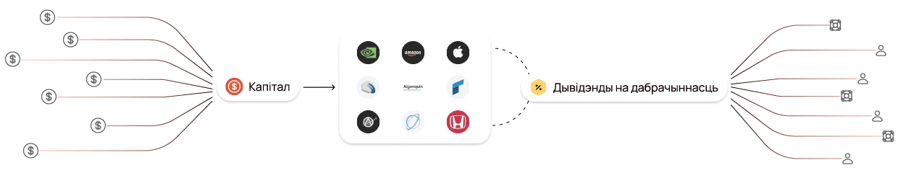
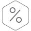

Незалежны фінансавы інструмент доўгатэрміновай падтрымкі

Пра Hexagonby
Hexagonby — гэта эндаўмент-фонд, які працуе на доўгатэрміновую перспектыву. Мы не разлічваем на гранты і знешняе фінансаванне, а ствараем фінансавую аснову, якая дазволіць падтрымліваць важныя ініцыятывы незалежна ад эканамічных крызісаў і палітычнай сітуацыі.
Наш падыход
Мы арыентуемся на празрыстасць і эфектыўнасць. У адрозненне ад класічных дабрачынных арганізацый, якія часта залежаць ад перыядычных ахвяраванняў, наш фонд пабудаваны так, каб быць самадастатковым. Мы клапоцімся пра тое, каб кожны ахвяраваны даляр працаваў не разава, а прыносіў даход на доўгія гады.
Прынцыпы Hexagonby
Незалежнасць — мы не будзем залежаць ад грантаў і знешніх фінансавых плыняў.
Доўгатэрміновасць — наш фонд пабудаваны так, каб працаваць дзесяцігоддзямі.
Разумнае інвеставанне — сродкі размяркоўваюцца максімальна бяспечна, з улікам доўгатэрміновага росту.
Нашы мэты і бачанне
Мы ствараем фінансавы механізм, які дазволіць устойліва падтрымліваць ініцыятывы і не залежаць ад вонкавых умоў. У кароткатэрміновай перспектыве мы фарміруем першасны капітал і наладжваем празрысты механізм інвеставання. Далей мы плануем павялічваць капітал фонду і пашыраць колькасць праектаў, якія могуць разлічваць на фінансаванне ад Hexagonby.
Наша галоўная мэта
Стварыць скарбонку, якая будзе працаваць заўсёды, незалежна ад знешніх фактараў.
Як гэта працуе
Эндаўмент-фонд (англ. endowment) — гэта фінансавы інструмент доўгатэрміновай падтрымкі, які дазваляе арганізацыі стабільна функцыянаваць і рэалізоўваць сваю місію на працягу многіх гадоў.
Галоўны прынцып эндаўмента — захаванне асноўнага капіталу і выкарыстанне даходу ад яго інвеставання.
Фарміраванне капіталу
Фонд атрымлівае ахвяраванні ад дабрачынцаў, арганізацый або іншых крыніц.
Інвеставанне сродкаў
Сродкі размяшчаюцца ў надзейныя фінансавыя інструменты (акцыі, аблігацыі, фонды і інш.), што дазваляе атрымліваць стабільны прыбытак.

Выкарыстанне даходу
Толькі даход ад інвестыцый выкарыстоўваецца для фінансавання праектаў і ініцыятыў, у той час як асноўны капітал застаецца недатыкальным.
Доўгатэрміновы эфект
Дзякуючы такому падыходу фонд можа існаваць на працягу дзесяцігоддзяў, забяспечваючы фінансавую стабільнасць і бесперапынную падтрымку ініцыятыў.
Эндаўмент-фонды шырока распаўсюджаны ў свеце. Паводле такой схемы працуюць шматлікія арганізацыі ад найлепшых заходніх універсітэтаў (Стэнфард, Кембрыдж) да Чырвонага крыжа.
Падтрымаць Hexagonby